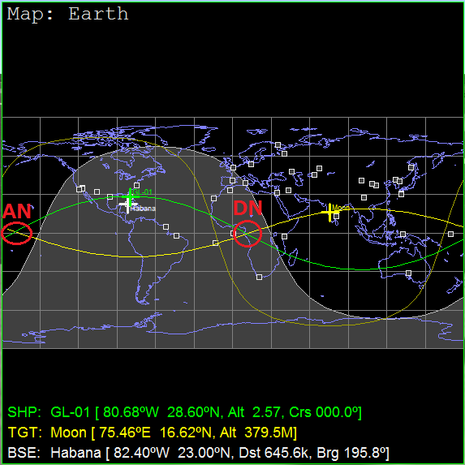
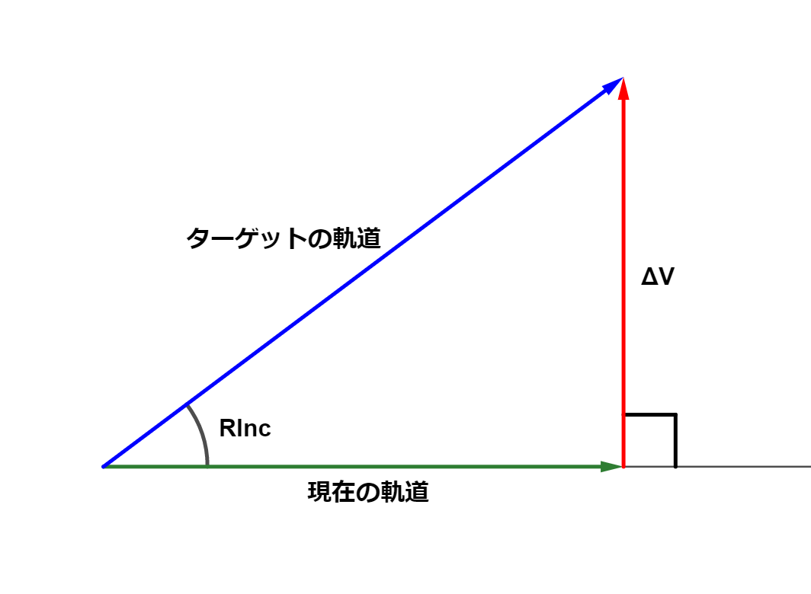
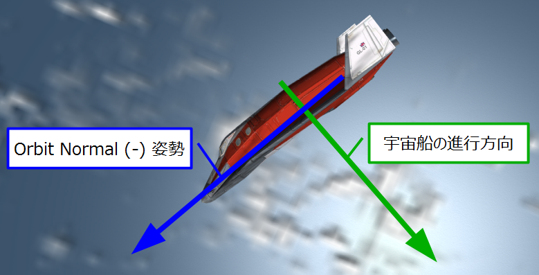
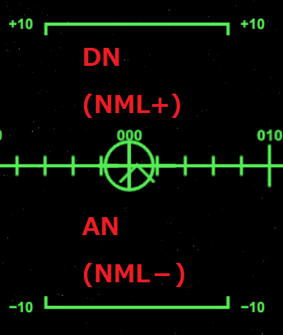
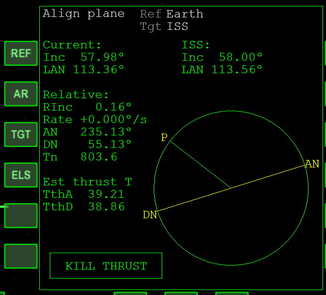

Align planes MFDの補足解説
Align planes MFDは、ふたつの軌道のずれを修正する（軌道面を一致させる）ためのMFDです。
2つの交点
自分の軌道とターゲットの軌道にずれがあるとき、両者の軌道は2ヶ所で交差することになる。

この2つの交点(node)を、それぞれ以下のように呼ぶ。
| DN | 降交点 | 宇宙船が北から南へ移動するとき |
| AN | 昇交点 | 宇宙船が南から北へ移動するとき |
DN or ANの位置は、Align MFD上に表示される。
Pが宇宙船の位置を表す。
軌道のずれを修正する
現在の進行方向に対して直角の方向に加速すると、速度ベクトルの向きが変わる。

軌道が交差する点でこの操作を実行することで、2つの軌道のずれを修正することができる。
宇宙船の姿勢を変える
DN or ANのいずれかが近づいてきたら、現在の進行方向に対して直角になる方向に機首を向ける。

| DNが近いとき | NML+に機首を向ける。 |
| ANが近いとき | NML-に機首を向ける。 |
これらはOrbit HUDの+ or -の表示にそれぞれ対応している。

エンジンを噴射する
自分の軌道と相手の軌道とのずれはRIncで表示される。
TthA /
TthDの時間を2で割って（画像の例では39÷2で約20秒）、Tnがその数字になったら、スロットル全開で噴射する。
RIncがゼロに近づくか、Rateが+になるまで噴射する。

エンジンの出力を半分に抑える場合は、時間を倍にして40秒前から噴射する。
| RInc | 軌道面のずれ。 相手の軌道面を基準にした角度として表示される。 |
| Rate | 軌道面のずれが変化する速度。 |
| Tn | 交点(AN or DN)までの時間。 |
| Est thrust T | 予測噴射時間。 |
| TthA | ANでの予測噴射時間。 |
| TthD | DNでの予測噴射時間。 |
注意点
エンジンの強力な一部の機体（Delta Gliderなど）では、「エンジン全開だとオートパイロットがNML+ /
NML-姿勢を維持できない」という問題が発生する。
このため、出力を低めに押さえて軌道変更する必要がある。
マニュアルにはKILL THRUSTの表示が出たらエンジンを切るよう書かれているが、無視して自分で判断すること。
KILL THRUSTの表示はあくまでも目安であって、完璧にタイミングを合わせる必要はない。
噴射時間の違い
宇宙船の速度によって、軌道面の変更に必要な速度変更(Delta V)は異なる。
速度が遅ければ、必要な噴射時間が短くなる。
速度が高ければ、必要な噴射時間が長くなる。
宇宙船の速度は、遠地点で遅くなり、近地点で早くなる。
したがって、遠地点に近いほうの交点のほうが噴射時間が短くなる。
TthAとTthDで予測噴射時間が異なるのはこのため。
打ち上げとAlign MFD
打ち上げと同時にAlign MFDを使うと、効率よく軌道投入することができる。
Part9 月への打ち上げ
タイミングを待って決まった方位に打ち上げるという基本は変わらないが、高度と速度が上がってきたら、Align MFDを見ながら針路を左右に調整する。
これによって、RIncを低く抑えることができる。
軌道上でAlign MFDを使ってRIncを下げるには、大量の燃料が必要になる。
打ち上げの段階でRIncをできるだけ小さくするよう心がけること。
その他の機能
各ボタンの機能は以下の通り。
| REF | 基準となる天体を指定する。 |
| AR | 基準天体を自動で設定する。 例えば地球から月の重力圏内に移動したとき、ARをクリックすると自動で地球から月に切り替わる。 |
| ELS | 軌道要素を指定する。 IncとLANの2つを入力する。 |
ELSボタンの使い方については、以下の記事を参照してください。
TransXの機能（中級者向け）